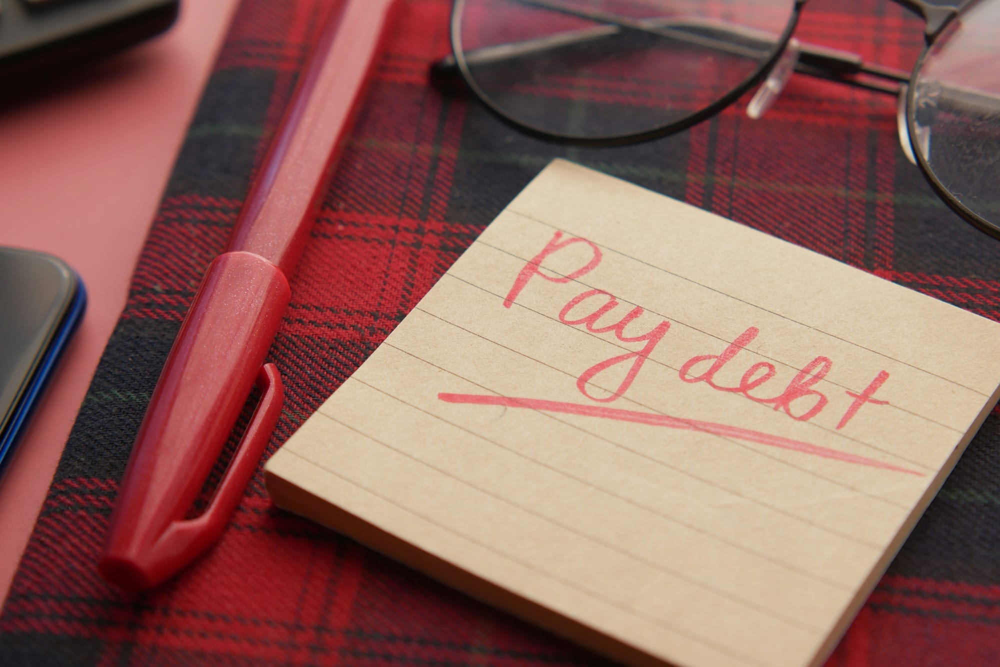

What Is the Debt Snowball Method and Does It Work?
The debt snowball pays off small debts first — but the math says avalanche wins. When the snowball is actually the right choice in 2026.
Z Zar · 23 Apr 2026 — 9 min read

📚 Part of our Budget & Debt Guide
The debt snowball method is one of the most widely recommended debt payoff strategies in personal finance — popularized by Dave Ramsey and used by millions of people to eliminate debt. It works. But it is not always the mathematically optimal approach.
Here is an honest breakdown of what the debt snowball is, when it works best, and when to consider alternatives.
What Is the Debt Snowball Method?
The debt snowball method involves paying minimum payments on all debts and directing every extra dollar toward the debt with the smallest balance first — regardless of interest rate.
Once the smallest debt is paid off, you roll its entire payment — minimum plus extra — onto the next smallest debt. The payment grows like a snowball rolling downhill, gaining momentum with each debt eliminated.
Example:
| Debt | Balance | Minimum Payment | Interest Rate |
|---|---|---|---|
| Medical bill | $400 | $25 | 0% |
| Credit Card A | $1,200 | $35 | 22% |
| Credit Card B | $3,800 | $85 | 19% |
| Car loan | $8,500 | $250 | 7% |
| Student loan | $22,000 | $220 | 5% |
Snowball order: Medical bill → Credit Card A → Credit Card B → Car loan → Student loan
With $200 extra per month:
Month 1-2: Pay $225/month on medical bill. Eliminated in 2 months.
Month 3+: Roll $225 onto Credit Card A — now paying $260/month. Credit Card A eliminated in approximately 5 months.
Month 8+: Roll $260 onto Credit Card B — now paying $345/month. Credit Card B eliminated in approximately 11 months.
And so on, with each elimination dramatically accelerating the next payoff.
The Psychology Behind Why It Works
The snowball method is not mathematically optimal. The avalanche method — paying highest interest rate first — saves more money in total interest.
So why does the snowball work so well for so many people?
Snowball vs Avalanche: The Numbers
On the example above with $200 extra per month:
Snowball method:
- Total time to debt-free: approximately 52 months
- Total interest paid: approximately $6,800
Avalanche method (highest rate first):
- Total time to debt-free: approximately 49 months
- Total interest paid: approximately $5,400
The avalanche method saves $1,400 in interest and finishes 3 months sooner.
However — if the snowball's psychological wins keep you on track while the avalanche's slower early progress causes you to abandon the plan, the snowball saves more money in practice even if it costs more in theory.
When to Use the Debt Snowball
Use the snowball if:
- You have struggled to maintain debt payoff plans in the past
- You have several small debts that can be eliminated quickly
- You need psychological motivation to stay on track
- The interest rate differences between your debts are relatively small
Use the avalanche instead if:
The Book Behind the Snowball
You Need a Budget
by Jesse Mecham
YNAB's method pairs perfectly with debt payoff: every extra dollar gets a job, and that job is paying down debt faster.
Quick wins create momentum. Eliminating a debt — any debt — generates a psychological reward that makes the next debt feel achievable. The medical bill elimination in month 2 creates confidence that the car loan can eventually be eliminated too.
Behavior matters more than math. The best debt payoff strategy is the one you actually follow through on. Research in behavioral economics consistently shows that people are more likely to continue a behavior when they experience early success.
Debt count reduction reduces overwhelm. Reducing the number of debts — from five to four to three — reduces the cognitive load of managing multiple creditors, minimum payments, and due dates. Simplification itself has value.
- You have strong financial discipline and do not need early wins
- Your highest-interest debt also has a significant balance
- The interest rate differences between debts are large — 15%+ spread
- You want to minimize total interest paid above all else
How to Implement the Debt Snowball in 5 Steps
Step 1: List all your debts from smallest to largest balance. Include balance, minimum payment, and interest rate for each.
Step 2: Calculate your total minimum payment obligation across all debts.
Step 3: Determine how much extra you can direct to debt payoff each month. Even $50-100 matters significantly.
Step 4: Direct all extra money to the smallest balance debt while paying minimums on everything else.
Step 5: When a debt is eliminated, immediately roll its entire payment onto the next smallest debt.
Tools to Track Your Snowball Progress
Undebt.it — Free online calculator that generates a complete snowball payoff schedule. Enter your debts and it shows exactly when each will be eliminated and your total payoff date.
YNAB — Built-in debt management features that track snowball progress alongside your budget. Seeing debt balances decrease in real time is motivating.
A simple spreadsheet — List debts, track balances monthly, watch the smallest ones disappear. Visibility drives behavior.
Common Snowball Mistakes
Not rolling payments forward. The entire power of the snowball is in rolling eliminated debt payments onto the next debt. People who pocket the freed-up cash instead of redirecting it lose the method's compounding effect.
Taking on new debt while paying off old. The snowball cannot work if the pile is growing while you are shoveling. Eliminate credit card use while executing the snowball.
Not celebrating eliminations. The snowball works partly through psychological reward. Acknowledge each eliminated debt. Mark it off your list. Tell someone. The celebration reinforces the behavior.
The Debt Avalanche Method Explained (2026): Pay Highest Interest First
The avalanche method is the mathematical opposite of the snowball: pay minimums on all debts, then put every extra dollar toward the debt with the highest interest rate, regardless of balance size.
How to use the avalanche method in practice:
- List every debt with its APR, not balance. Sort descending by APR (highest first). Credit cards typically top this list at 22-28%, then personal loans at 11-18%, then student loans at 5-8%, then mortgage at 6-7%.
- Calculate the minimum payment for each debt. Pay every minimum, every month, no exceptions. Missing a minimum kills the strategy immediately because of late fees and APR bumps.
- Apply every extra dollar to the highest-APR debt. If you have $400/month above all minimums, all $400 goes to the credit card at 26% APR — never split it.
- When that debt is gone, roll that payment to the next highest APR. The dollar amount you were sending to debt #1 (minimum + extra) now goes entirely to debt #2.
- Repeat until debt-free. By the time you reach the lowest-APR debt, you have the entire monthly debt budget hitting one balance, accelerating the final payoff.
The math: on $30,000 of mixed debt at average 14% blended APR, the avalanche method typically saves $2,000-$3,500 in interest vs the snowball over the same payoff window. The downside is the first "win" feels further away because you might attack a $9,000 credit card balance before a $400 store card.
Debt Snowball vs Avalanche vs Hybrid: Which Wins in 2026?
Direct comparison on the three dimensions that determine which approach is right for you:
- Total interest paid — Avalanche wins, always. Typical savings: $1,500-$4,000 on $30K debt depending on APR spread.
- Time to debt-free — Avalanche typically wins by 1-3 months on the same monthly budget, again because higher-APR balances compound faster.
- Completion rate — Snowball wins. Studies from the Kellogg School and JFEP show snowball users are 10-15% more likely to actually finish debt payoff because the early small wins build momentum.
The honest framing: if you have failed at debt payoff before because you lost motivation, choose snowball — the behavioral edge is worth the small interest cost. If you have never failed and trust your discipline, choose avalanche — the math is on your side. The hybrid approach (knock out the smallest debt first for the morale boost, then switch to avalanche from debt #2 onward) captures most of both benefits.
Debt Consolidation Options in 2026 (When Snowball/Avalanche Is Not Enough)
If your blended APR is 20%+ or your total balance exceeds 6 months of income, consolidation can accelerate payoff before applying snowball or avalanche logic:
- 0% APR balance transfer cards — Best for credit card debt under $15K, requires 670+ credit score, typically 18-21 months of 0% interest with a 3-5% transfer fee. SoFi, Citi Simplicity, Wells Fargo Reflect lead the 2026 offers.
- Personal consolidation loan — Fixed-rate, 3-5 year term, typically 9-15% APR for 700+ credit scores. SoFi, LightStream, and Discover dominate the prime market. Best for replacing multiple high-APR debts with a single predictable payment.
- Home equity line of credit (HELOC) — Lowest APR option (7-9% in 2026) but secured by your home. Only use if your debt-to-income is below 35% and your job is stable — you trade unsecured debt for secured.
- 401(k) loan — Avoid unless you have no other option. You are borrowing against your retirement at low interest but losing market returns on the borrowed amount, plus the loan is due immediately if you leave your job.
- Debt management plan (DMP) — Non-profit credit counseling agency negotiates lower rates with your creditors in exchange for a single monthly payment to the agency. Typical fees: $25-75/month. Best for unmanageable credit card debt without strong enough credit for consolidation.
Consolidation is a tool, not a strategy — it lowers the APR but only matters if combined with strict spending discipline. The most common debt mistake in 2026 is consolidating credit card balances into a personal loan, then running the credit cards back up on the now-zero balance. If you do that, you double your debt instead of paying it off.
Debt Payoff Strategies FAQ (2026)
What is the fastest way to pay off debt in 2026? Mathematically: avalanche method on the highest-APR debt while consolidating any credit card balances to a 0% balance transfer card if your credit score is above 670. Behaviorally: snowball method to build momentum. The fastest in practice is whichever you can actually stick to for 18+ months.
Should I pay off debt or invest first? Pay off any debt above 7-8% APR before investing in a taxable brokerage. Get the 401(k) employer match first (free money), then attack high-APR debt aggressively, then resume retirement contributions. Mortgage and federal student loans at 4-6% APR can be paid in parallel with investing.
What is the debt avalanche method and how does it work? Pay minimums on every debt, then apply all extra money to the debt with the highest interest rate. When that debt is gone, roll the entire payment to the next-highest-APR debt. Continue until all debts are zero. Saves the most interest, typically pays off debt 1-3 months faster than snowball.
Is the debt snowball or avalanche better for credit card debt? Avalanche, by a significant margin. Credit card APRs in 2026 (22-28%) compound so quickly that the snowball method costs hundreds in extra interest per $1,000 of balance per year. The exception is if you have failed multiple times — the snowball completion rate is materially higher.
How long does it take to pay off $20,000 of debt? At $500/month extra on top of minimums and blended 15% APR: 4-5 years with snowball, 3.5-4 years with avalanche. At $1,000/month: 2.5 years and 2.25 years respectively. The biggest variable is not the method — it is the amount you can pay above minimums.
If you want the broader budget context for finding extra cash to throw at debt, see our comparison of budgeting methods and our step-by-step budgeting walkthrough.
If you are still torn on whether to pay off debt or save, we ran the 2026 numbers and the gap is bigger than most people think.
The Bottom Line
The debt snowball works — not because it is mathematically optimal, but because it is psychologically powerful. Quick wins build momentum, and momentum builds habits.
If you have been struggling to make progress on debt, start the snowball today. List your debts from smallest to largest. Find $100 extra this month. Attack the smallest balance.
The momentum builds from the first win.
Want to go deeper on this? See Best Ways to Save Money on Subscriptions in 2026.
Want to go deeper on this? See The 50/30/20 Budget Rule Explained (And How to Make It Work for You).
Want to go deeper on this? See Best Apps to Save Money Automatically in 2026.
📥 Free download: The 10-Step Financial Independence Checklist
The exact roadmap I followed to build my financial foundation. 11 pages, professionally designed, free with email signup — no credit card, unsubscribe anytime.
Want to see snowball vs avalanche on your real numbers? Run them in the free debt payoff planner in our 12-month payoff guide.
Disclosure: This post may contain affiliate links. ZarWealth may earn a commission if you sign up through our links, at no extra cost to you.